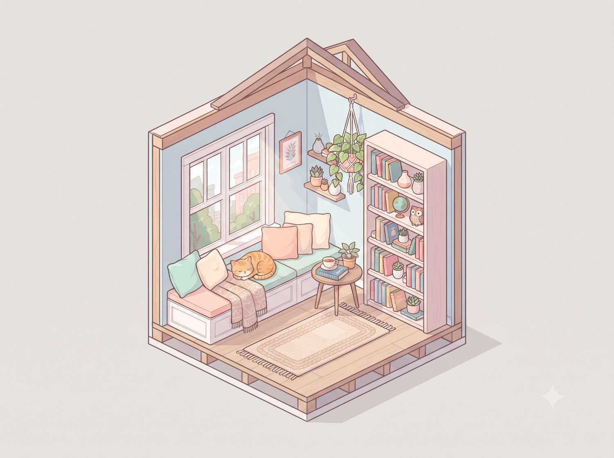

Isometric scene prompt
Isometric room diorama
Build a charming miniature reading nook as a clean, softly shaded isometric illustration.

Copy this prompt
A cutaway isometric diorama of a cozy reading nook: a window seat with cushions, tall bookshelf, hanging plant, and a cat curled up asleep. Soft pastel color palette, clean vector-style shading, subtle drop shadows, presented like a miniature dollhouse cross-section on a plain background.
How to use it
- Paste the prompt into an image tool that supports illustration generation.
- Replace the reading nook details with a room or hobby you want to feature.
- Ask for a consistent isometric angle and simple background to keep the miniature legible.